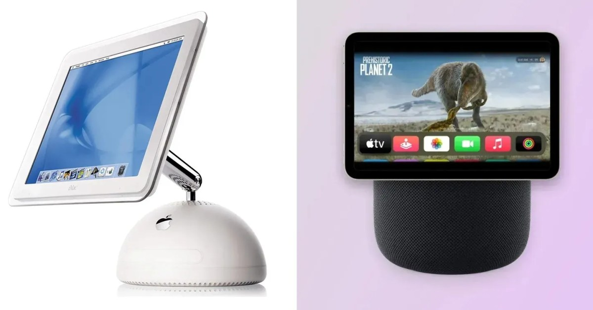

애플 스마트홈 허브 '홈패드', 아이맥 G4 디자인으로 10월 13일 공개
블룸버그 보도에 따르면 애플이 오랫동안 소문으로만 떠돌던 스마트홈 허브 '홈패드'를 10월 13일 출시할 예정이며, 6인치 디스플레이와 과거 아이맥 G4를 연상시키는 디자인을 채택한 것으로 알려졌다. 동시에 새로운 AI 기반 음성비서를 탑재한 홈팟 미니 업데이트도 함께 공개될 것으로 전해지며, 애플이 구글·아마존이 선점해온 스마트홈 허브 시장에 본격 진출함을 시사한다.